Tutorial 06: Physics
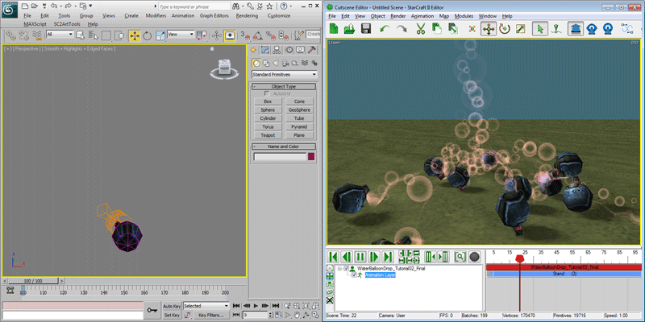StarCraft II uses the 'Domino Physics Engine' for driving some of the explosion debris and ragdoll deaths that are in the game. This tutorial introduces you to setting up physics objects that fall from the air like explosion debris.
Getting Started
-
Open 'WaterBalloonDrop_Tutorial01_Start.max'. It is basically same as the file at the end of the 'Basic Particles' tutorial except the viewport is zoomed out more. We will use the WaterBalloon mesh as the starting point for this tutorial.
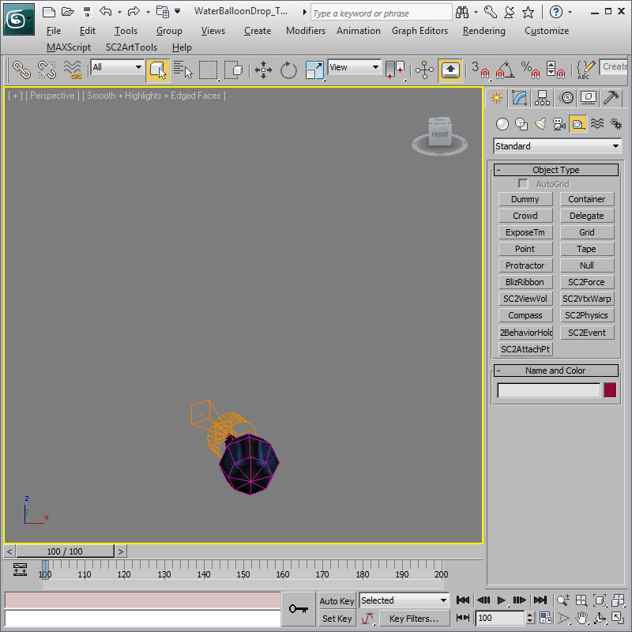
Physics Object Creation
-
We will start by creating a 'SC2Physics' helper. On export, any node in 3ds Max with a 'SC2Physics' helper linked to it would be converted into a physics object usable for the Domino Physics Engine. The button for creating a 'SC2Physics' helper is located in the 'Create' panel, under 'Helpers/Standard'. Press the 'SC2Physics' button, change 'Shape Type' to 'Sphere' and 'Radius' to '13.5'.
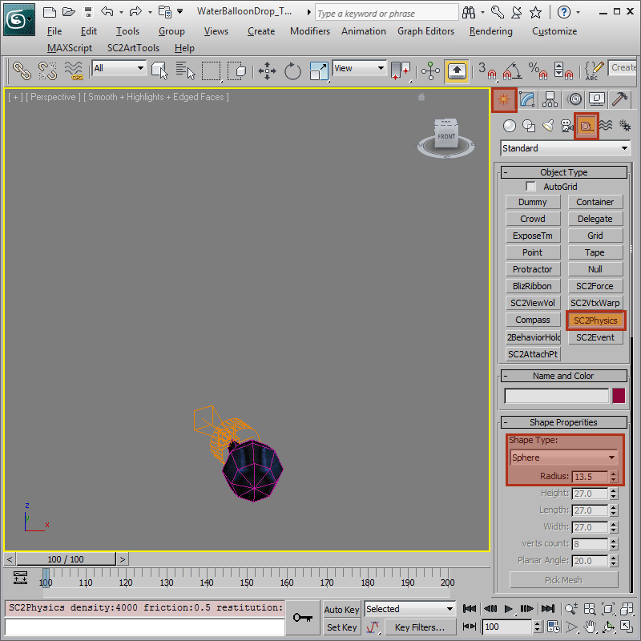 -
Next, left-click and drag in the viewport until the sphere that represents the 'SC2Physics' helper is centered around the 'WaterBalloon' mesh as shown. Release the left mouse button and a 'SC2Physics' helper is created. If the 'SC2Physics' helper still isn't aligned with the 'WaterBalloon' mesh, just reposition by moving it.
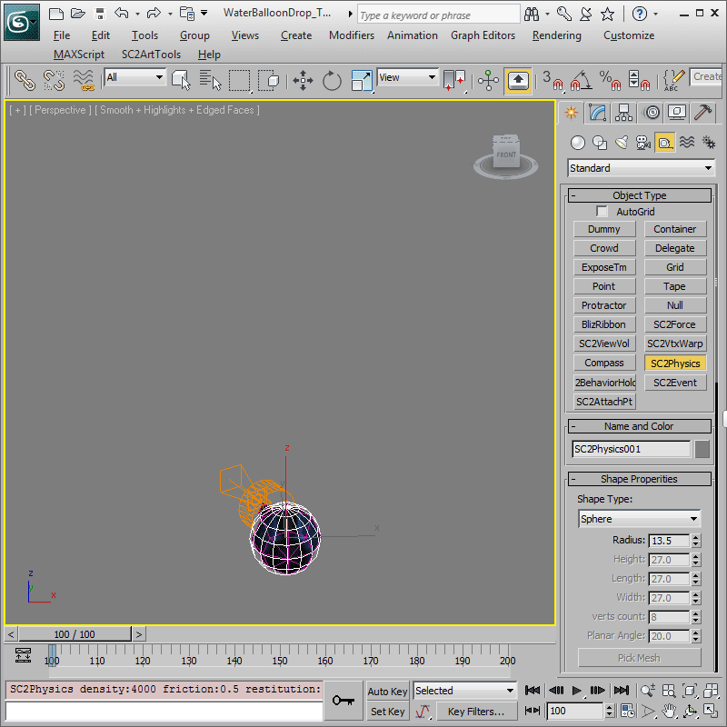 -
We now need to show the exporter which node the 'SC2Physics' helper should represent, which in our case is the 'WaterBalloon' mesh. To do that, link the 'SC2Physics' helper to the 'WaterBalloon' mesh.
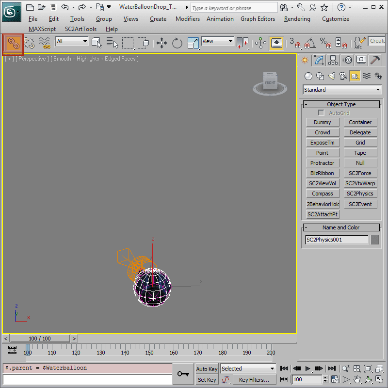 -
We should also lift the WaterBalloon further up into the air so it has some room to fall. Do so by selecting the WaterBalloon mesh, right-click on the 'Select and Move' button and type in '100' for the 'Z-axis'.
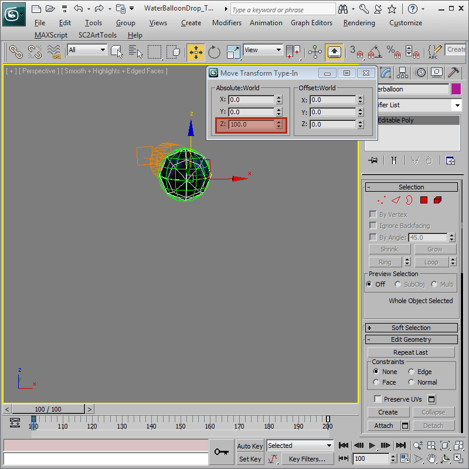 -
Go to 'SC2ArtTools > Export > Preview' and launch the Cutscene Editor to preview the model. In the Cutscene Editor, the WaterBalloon is playing its 'Stand' animation but it isn't falling. What could be wrong?
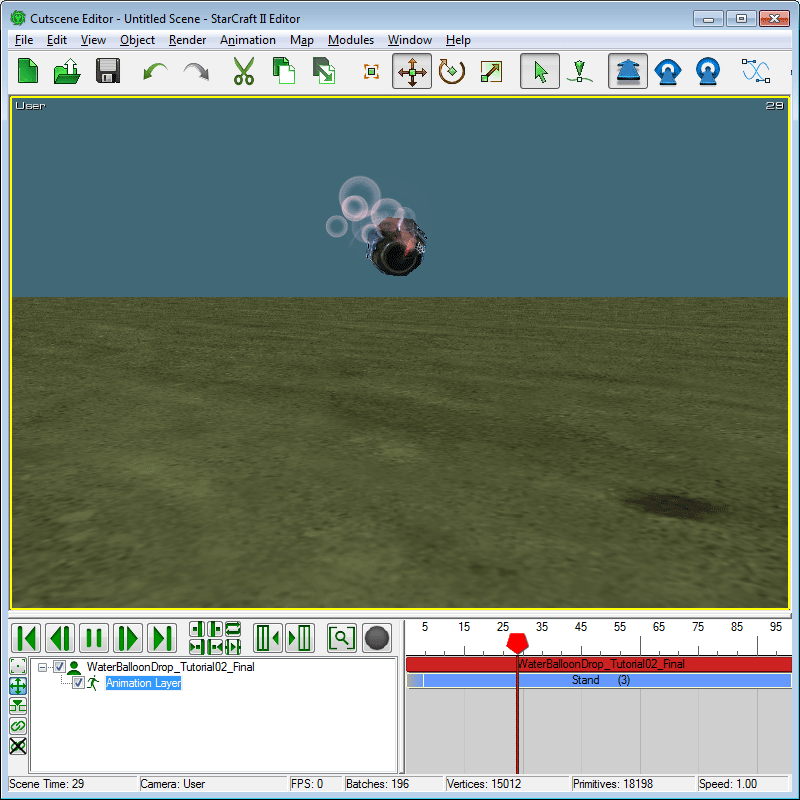 -
Let's confirm that the WaterBalloon has been converted into a physics object. In the Cutscene Editor, toggle On 'Render > Show Geometry > Physics'. A blue sphere, which is the exported representation of the 'SC2Physics' helper from 3ds Max, is now visible and it is rotating along with the WaterBalloon. If the WaterBalloon is a physics object, why then isn't it falling? The answer lies in the fact that it has yet to be assigned the correct Physics State.
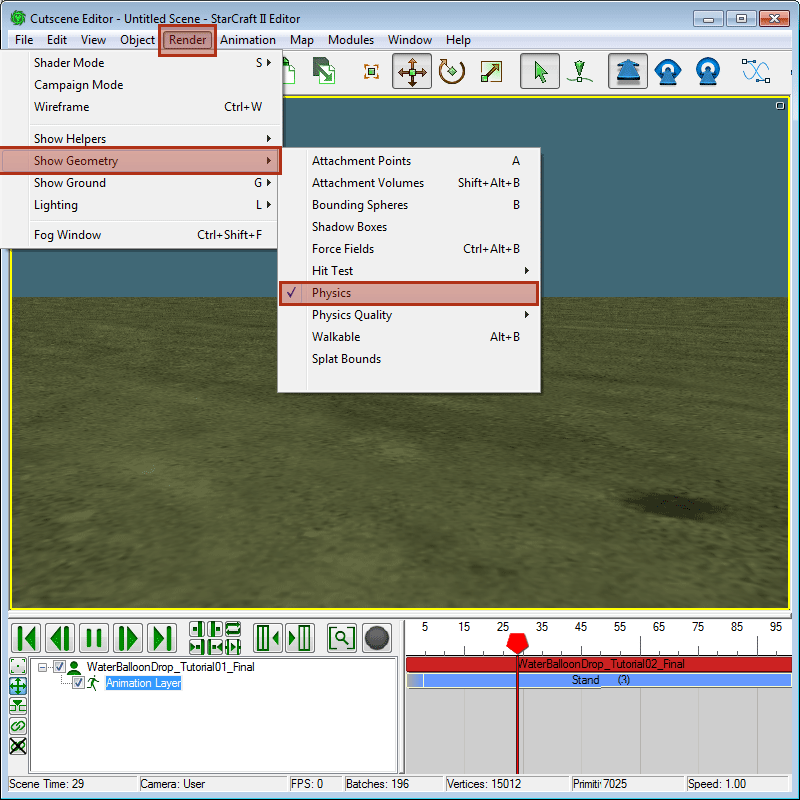
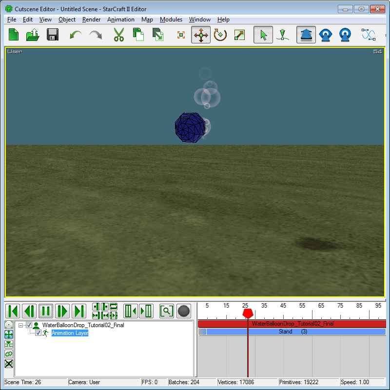
Physics State
-
In StarCraft II, a physics object could be in one of three physics states: Static which is an object that does not move or react to physics, but other physics can react to it; Active Kinematic which does not react to physics, instead, it is moved by keyframed animation and used solely to cause reaction in other physics objects; Active Dynamic which can both react and act on other physics objects. By default a newly created 'SC2Physics' helper is Active Kinematic. In order for our WaterBalloon to react to physics, we would need to change it to Active Dynamic.
Back in 3ds Max, with the 'SC2Physics' helper selected, in the 'Modify' panel, scroll down to the 'Simulation Properties' rollout. Turn off 'Inherit Physics State' and make sure the radio button is on 'Active'. The 'Key' check button should also be depressed which indicates that it is in Dynamic physics state.
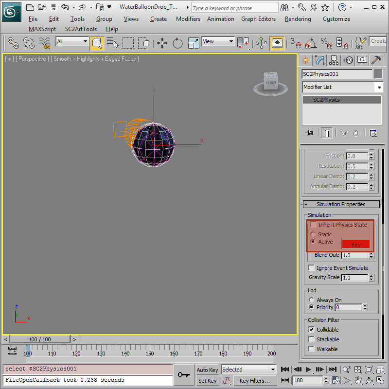 -
Preview again. The WaterBalloon should fall from the air as soon the Cutscene Editor is updated. If the ground plane isn't already showing in the Cutscene Editor, you can display it by checking toggle On 'Render > Show Ground > Terrain'. With the ground plane showing, the WaterBalloon should collide with it and come to a stop. For this WaterBalloon though, it may be more appropriate if it bounces a little before coming to a stop. To do that, we will give it a different 'Physics Material'.
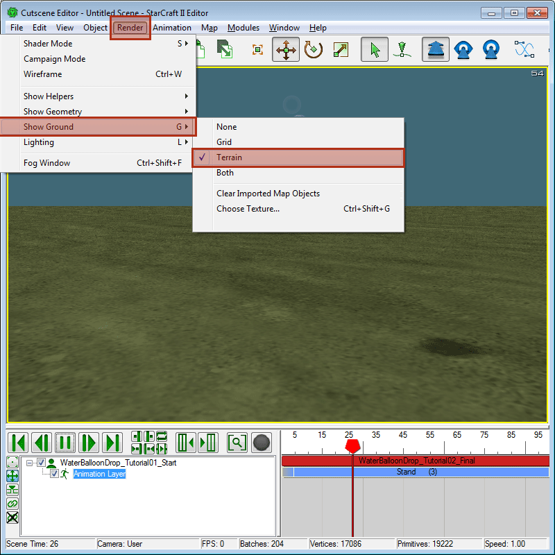
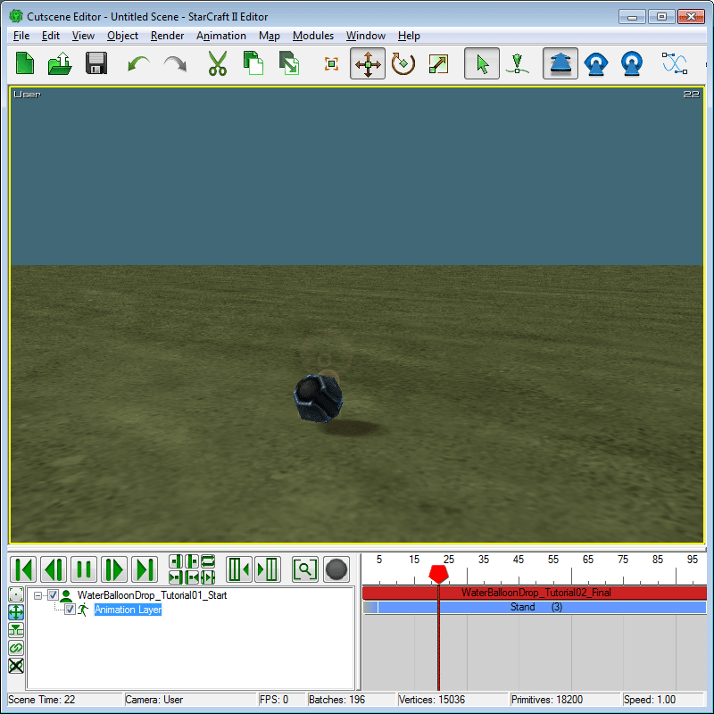
Physics Materials
-
To get the WaterBalloon to bounce more, we would assign a Physics Material with a higher Restitution value to it. With the 'SC2Physics' helper selected, in the create panel, scroll to the Physics Material section and change the material presets in the dropdown box to 'Rubber'.
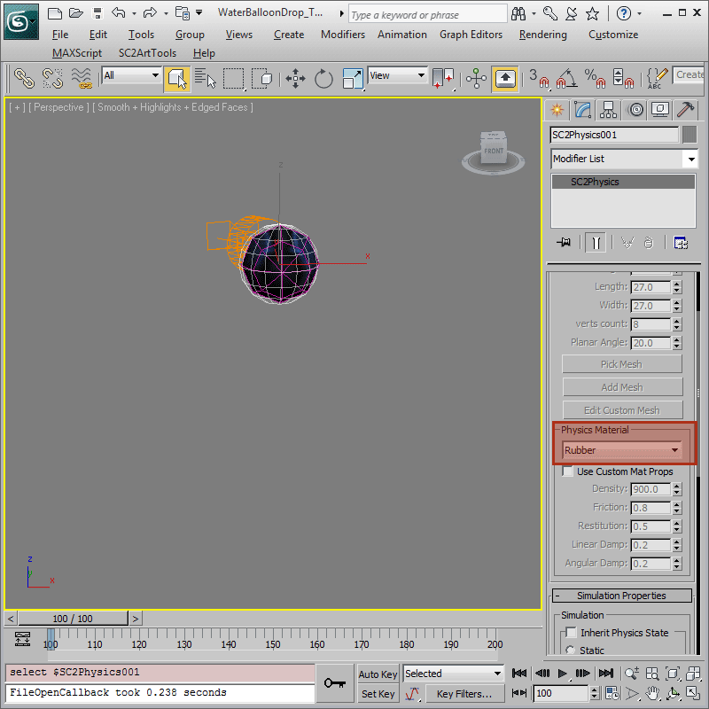 -
After another Preview, you would see in the Cutscene Editor that the WaterBalloon bounces a few times before coming to a rest.

Collision Filter
-
Now let's see what happens if we add another WaterBalloon. In 3ds Max, double-click on the WaterBalloon to select it and all the parts linked to it including the particles and 'SC2Physics' helper. Shift-move everything up along the 'Z-axis' to make a copy.
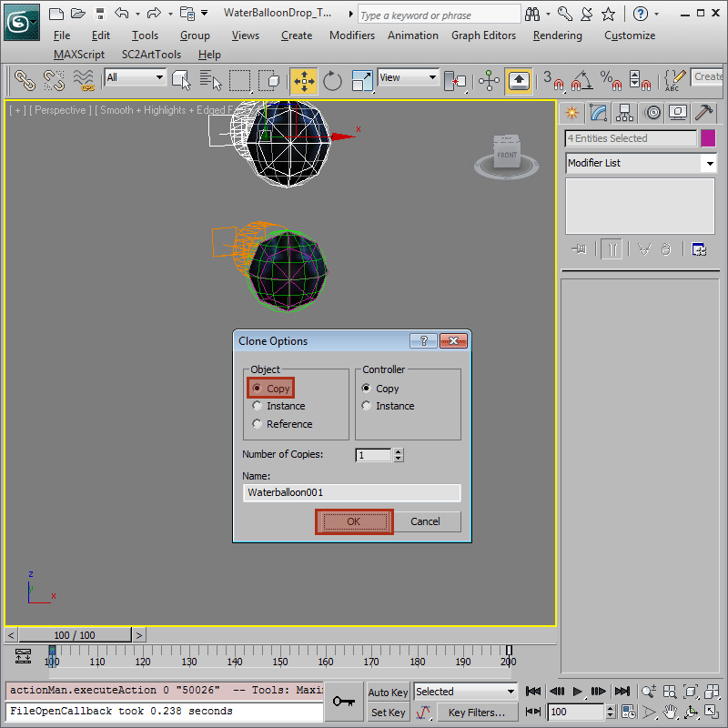 -
Preview and there are now two WaterBalloons falling from the air. However, when they cross paths, they are going through each other.
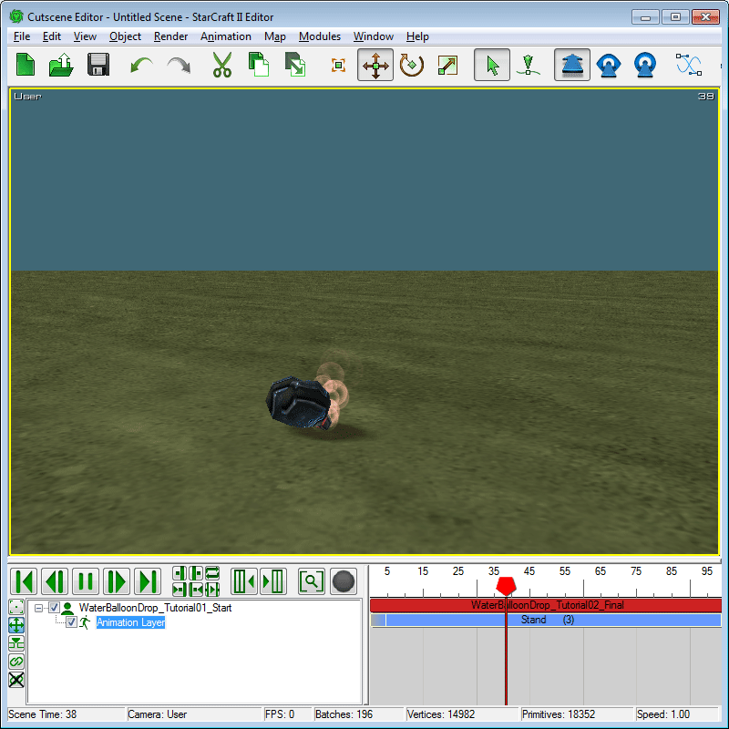 -
The reason this is happening is because by default, 'SC2Physics' helpers are created with only the 'Collidable' Collision Filter enabled. This is faster in performance, but to have these two Dynamic physics objects interact with each other, we need to enable the 'Stackable' Collision Filter. Go through the two 'SC2Physics' helpers and check the 'Stackable' checkbox in the 'Collision Filter' section.
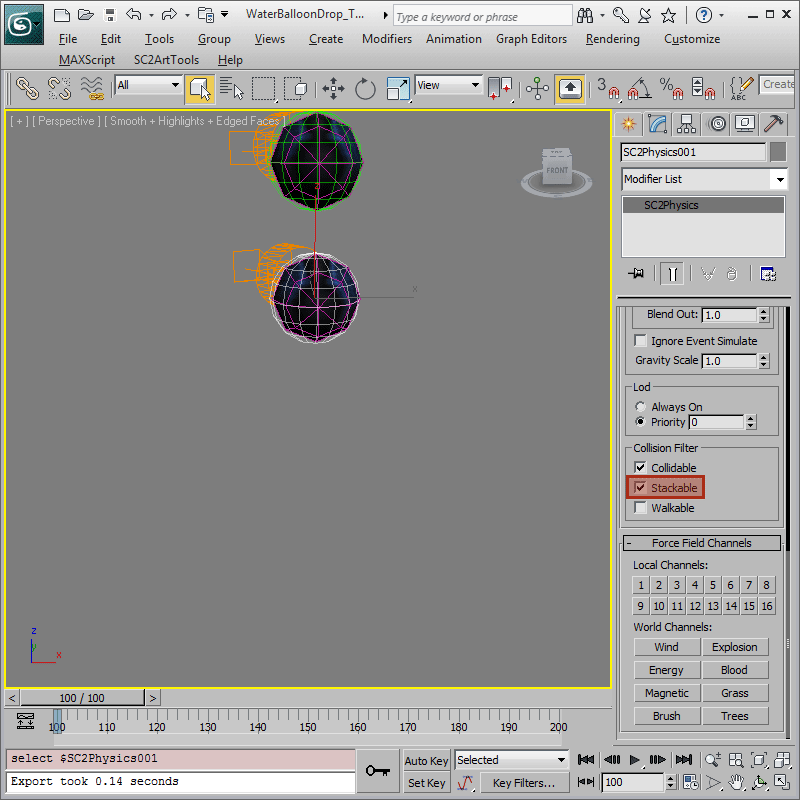 -
Preview once again and the two WaterBalloons should now bounce off of each other as well as the ground.
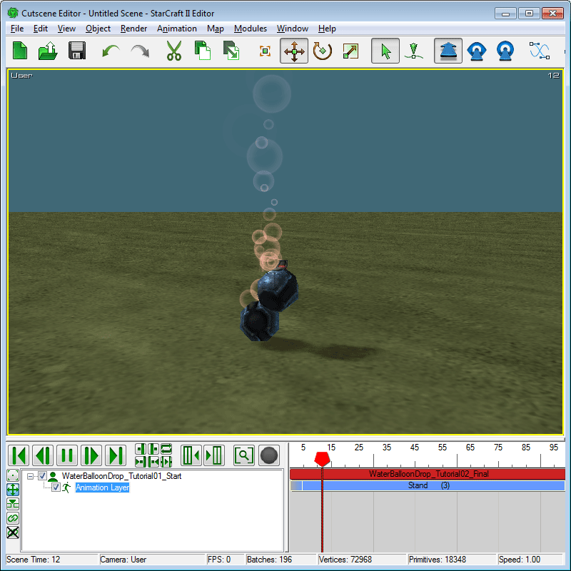 -
If you like, experiment with different Physics Materials as in Step 10 and make a few more copies of the WaterBalloon by repeating Step 11. A max file with ten copies of the WaterBalloons can be found in WaterBalloonDrop_Tutorial02_Final.max.
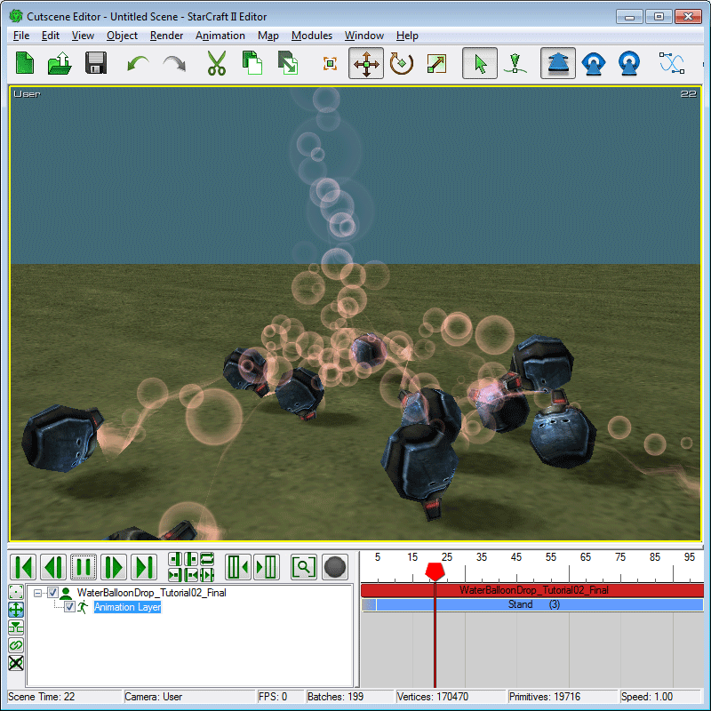